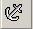

Create a Bookmark
AbiWord allows you to insert a bookmark, or marker, that identifies a document or a specific place in a document. By creating a Bookmark you can easily navigate to a particular point or section in your document. If you're in a hurry, you may find this easier than trying to navigate by going to page numbers.
Let's create a bookmark by following these few simple instructions:
- Type a list of three or four items, e.g. dog, cat, bird, frog
- Highlight one of the items in your list
 - Select the button
The Insert Bookmark window appears.
- Type a name for the bookmark in the Insert Bookmark dialog
- Select
- Select the button
Note: You can also create a bookmark by selecting Bookmark from the Insert menu.
You have just completed this section of Lesson 6 and can now create a bookmark. If you'd like to move forward and learn how to create a hyperlink, select Next. If you'd like to go to a different section within this lesson or to a new lesson, choose from one of the options in the Navigation bar.